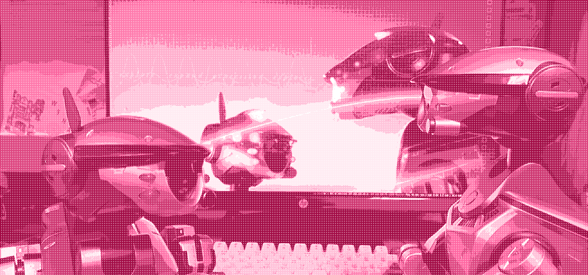

life with aibo

What is AIBO?
AIBO (stylized as 'aibo' post-2018) is Sony's series of commercial entertainment robots. An entertainment robot is a robot with the primary goal of creating an emotional response in the user rather than performing a 'practical' task.
AIBO is a product that spun out from reasearch initiatives in the Sony Computer Science Laboratory (Sony CSL), a group structured after successful American commercial computer research initiatives like Xerox's PARC. CSL was, and continues to be, a place where researches attempted to unite new technologies and human interfaces to advance the development of consumer technology. Researchers from CSL that became particularly invested in early robotics and locomotion experience created the Digital Creatures Laboratory, the lab responsible for developing AIBO.
By the time the Digital Creatures Laboratory began approaching a product that started to resemble the first AIBO in 1998, there had never been a prescident for a product like AIBO being on the market, especially at cost. AIBO would end up being a limited-order product, online only (an extreme oddity in 1999) that aimed to act as a showcase of Sony's recent developments instead of targeting a particular demographic (the cost and general lack of marketing made that much self-selective.) Surprising everyone, the original AIBO sold out 3,000 units in Japan within a period of 20 minutes. In the US, 2,000 units were sold over the course of 4 days.
After the original run, AIBO would expand and continue as a niche, but strong, brand with 3rd party software support. AIBO would foster a strong community of enthusiasts that lived primarily on personal webpages and some text BBs in the early 2000's and eventually settled on community-run forums throughout the rest of the product's lifespan and beyond. In English-speaking circles, AIBO fans were a tight-knit group that held IRL meetings called 'shindigs' and created a large variety of technical projects and robotic art. Researchers would favor AIBO as a reputable and extremely well-adopted platform for studies of human-robot interaction, pattern recognition, DSP, and multi-agent cooperation. AIBO remained the standard platform for the RoboCup soccer competition until at least 2007.
Following corporate restructuring, the original AIBO was finally discontinued in March 2006, after producing ~150000 units. This was despite entertainment robot sales reporting growth. To many, the loss of AIBO represented the loss of more things than just a singular commercial product. In the April 2006 edition of SERVO magazine, Dave Calkins wrote about how the RoboCup list-serve was "abuzz with please to Sony to keep the Aibo", but that "all of these brilliant roboticists should move forward" and embrace an as-of-yet unrealized open source robotics platform. His thinking was that the lack of AIBO's presence in the market would push forward the development of new robotics platforms, but no consumer product ever filled AIBO's niche on the market. In RoboCup, AIBO was replaced with NAO, a bipedal platform developed by Aldebaran Robotics. NAO was innovative and charming, but was never intended to exist in the consumer space or among everyday people.
Today, and for good reason, the most successful consumer robot is Roomba. Nothing has come close to Roomba's prevalence. Many have tried to introduce social robotics platforms to the home, one such product being Jibo, but these Alexa-esque mobile agents have spun out on the market over and over again. The reasoning for this can be theorized about on another page, but needless to say, AIBO had become a nostalgic memory: emblematic of a desire for a certain kind of future emphasizing collaboration between computers and humans that was no longer so romanticized in the 2010's.
Despite this, rumors circulated for over a decade online that the return of AIBO could be in the future. From robotics industry insiders expressing their hunch that there was interest, to patents filed by Sony resembling their humanoid robot from the AIBO era, QRIO-- to fans, the return of AIBO seemed like an impossible dream, but a lot of people still felt like it was in the cards.
In 2017, Sony began incorperating AI and robotics into some of its public goals, including the AI x Robotics initiative page. Sony reappeared at RoboCup and brought QRIO, repeating some of the classic demos for the first time in almost two decades.
Finally, in 2018, it was confirmed that the aibo ERS-1000 would launch in Japan. A group of Xperia developers had been secretly planning at that point for a period of at least a year to start a new AIBO project, a timing that happily coincided with a corporate return to old focuses on innovation. I still remember this day like it was yesterday. It was halloween night in America, and I seriously jumped with joy!
Today, the ERS-1000 has enjoyed regular software updates and a new color revision every Valentine's day. The landscape of AIBO is very different-- Sony has not connected the research community to AIBO and the platform is significantly more closed. The old AIBO community has mostly dispersed. There is much critical evaluation to do, but still, AIBO's return meant a lot to me, and a lot of other people, that are really excited about what robots could do to help people in the future. Nobody knows what's next, but the developers are actively working hard. We'll have to wait and see!
What does AIBO mean to me?
I was not really invested in robots in any way as a young kid and was mostly focused on my fruitless obsession with cats. (My mom is seriously allergic to cats, so the closest I got to hanging out with them was volunteering at a cat shelter, which was always quickly followed up by a severely enforced shower.)
In 2008, I was in 1st grade (yeah) and my school very occasionally was able to bring presenters into our art classroom for all-school assemblies to introduce us to a few career paths. One of these presentations was a robotics presentation. In concept, simple: the presenter had a few physical robots to show off, and a few videos (including early Boston Dynamics footage). Regardless, I felt myself getting invested.
Eventually, the man extracted from a black padded case a silver robot with pointy ears.
"This is AIBO, he said. He's usually pretty obedient, but my daughters have been training him not to listen to me."
The small humanoid robots capable of doing push-ups and flips were cool. Footage of robots ambling through the woods was cool. But for some reason, AIBO absolutely stunned me. I couldn't believe what I saw. I told my parents about it as soon as I went home, and from that moment on, AIBO had solidly become my obsession, eventually becoming an obsession with robots in general.
Despite how much I loved researching and reading about AIBO, it would be 7 years before I would ever meet one in person. Much to the dismay of my parents, my fixation would not wane. I printed out pictures of AIBO and other robots and taped them to my wall. I read personal blogs and forum archives. At some point, I got into research papers, too. But I never met an AIBO in person, and it would be a couple of years until video streaming was ubiquitous enough to provide an additional outlet. I was stuck with a robot obsession, and had no way to turn it into much of anything at all. The social robotics websites introduced me to other topics I would fall in love with: languages, Star Trek, personal websites, software, and so much more.
The years between 3rd and 8th grade would become occupied with linux and computer programming. If my memory isn't completely decieving me, Python 2 was becoming more ubiquitous at this time, and was approaching the beginning of its meteoric rise. Python 2 would be the first programming language I learned, other than BASIC on an old family Apple II. The beginnings of the concept of a 1 to 1 laptop policy in schools would follow shortly afterwards, and I was allowed to use an old HP netbook loaded with Linux Mint.
At this point, a few things were clear. I still hadn't gotten bored of reading about robots on the internet, and I would need to figure out how to meet or make one. Secondly, computers in general were occupying the rest of the space in my brain, so it wouldn't be anything I could escape in the near future. As soon as I turned 13, I joined all of the forums I had spent years lurking and had cared enough about not to break COPPA for, and finally started integrating with those communities. I was a frequent user of the 'Advanced Topics' board on scratch.mit.edu, but the landscape was changing and I was finally talking to professionals in 'adult spaces' for the first time.
One of the users on my favorite forum, AIBO-Life, named WolfBob, was the defacto AIBO repairman in the United States. He saw that I wanted to develop software for AIBO and knew my situation, and extended an offer to me: borrow an AIBO and develop a potentiometer-cleaning software for him.
I cannot express how deep of an impact this had on me. WolfBob probably didn't think a whole lot of it-- he had been on the boards for probably a decade at that point and was very comfortable with the close-knit feeling of the community. For him, he had the robots sitting around and didn't have the energy to make the software himself. But for me, coming from a place where my parents impressed on me that strangers on the internet, and in general, regardless of their place in my community would primarily be a risk of danger-- it absolutely blew my mind that he would trust me with something like this. I would finally get to fulfill what was essentially my lifetime dream and would get to do something I wouldn't have been able to figure out how to do in any other situation. I developed software, recieved feedback from the community, open-sourced it, iterated on it, created releases, and wrote respectful emails to well-reputed technical strangers to propogate our work.
I really had so much fun. This project changed my life and set me up for success in high school and above. WolfBob passed away in 2017 and I cannot express anything but the most sincere thanks to him and his family and everyone that was involved in the community and the project. Bob was extremely patient, kind, and was an incredible mentor to me at such a young age. Thank you.
Middle school came to an end, and high school began at full speed. All this is to say that the AIBO community, and the feelings AIBO evoked in me put me on the trajectory I am today. I would not be the person I am without AIBO. I've had to overcome a lot and am still fighting hard to overcome new challenges to aim for a future where I can study technology and robotics as a career, and I would have never discovered it or cultivated such a passion for it were it not for my being exposed to something like AIBO at a young age.
I want to live in a future where ethics and human-computer interaction are at the forefront of our technologies, where computers and robots exist to enhance our lives and make people happier. Nothing has taught me this lesson better than AIBO!
Today, my professors don't really get it when I talk about AIBO. "Really? Those old deprecated things?" But to me, this platform is irreplacable. All of the pages on this section of the site are dedicated to the coolest robotics platform on the block.
名前など 知らない 僕は... そっと息を潜めた、